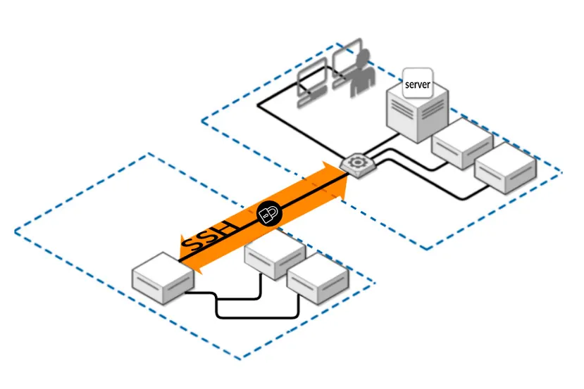
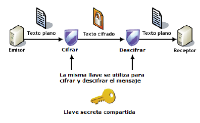
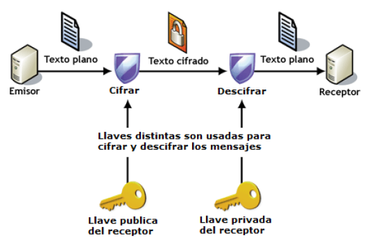

¿Qué veremos en este módulo?
En este módulo veremos distintas metodologías y tecnologías que deberemos utilizar para el despliegue de aplicaciones en entornos web.
Por un lado trataremos las técnicas y procesos esenciales para llevar a cabo la implementación exitosa de aplicaciones web en entornos de producción. Esto incluye la instalación y configuración básica de servidores web (apache, nginx) y servidores de aplicaciones (tomcat), la implantación de aplicaciones web sobre los servidores desplegados, así como la instalación y configuración de servicios de red necesarios (servidor de nombres de dominio DNS, hosting, transferencia de ficheros mediante FTP, etc).
Puesto que hoy en día es cada vez más habitual el uso de servidores virtualizados en entornos "cloud" veremos el despliegue de todo lo anterior utilizando tecnologías de virtualización de servidores en la nube y usando contenedores.
Otra de las partes importantes del módulo es la instalación, configuración y uso de sistemas de control de versiones en proyectos de desarrollo SW. Nosotros nos centraremos en git.
Finalmente entraremos en la metodología CI/CD (Continuous Integration/Continuous Deployment) que es un enfoque en el desarrollo de software que busca automatizar y agilizar la entrega de aplicaciones a través de un ciclo de desarrollo continuo.
Veamos cada uno de estos apartados con un poco más de detalle.
Implantación y administración de servidores web
Para poder desplegar una aplicación web lo primero que necesitaremos será un servidor web. Así pues, en primer lugar deberemos conocer qué es un servidor web y qué tecnologías de servidores web existen.
Seguidamente estudiaremos los protocolos utilizados en la transferencia de páginas web (http, https), su historia y funcionamiento.
Continuaremos viendo los servidores web más utilizados actualmente (Apache y Nginx), sus diferencias y aplicaciones. Los instalaremos y configuraremos.
Servidores de aplicaciones
En sus primeros tiempos la web fue estática, es decir, el creador de las páginas web definía su contenido y los usuarios simplemente lo consultaban. Con el tiempo fueron surgiendo escenarios de interactividad creciente, en los que las páginas servidas dependían de las acciones del usuario.
Pero los servidores web habían sido desarrollados solamente para servir páginas web. Así pues, se hace necesaria la aparición de algún agente que pueda generar páginas web de forma dinámica, en función de los requerimientos del usuario, y entregarlos al servidor web para servirlas. Surge así el concepto de "servidor de aplicaciones"
Veremos, pues, cómo funcionan este tipo de servidores, distintos tipos y aprenderemos a instalarlos y configurarlos.
Servicios de red implicados en el despliegue de aplicaciones web
Además del propio servidor web se hacen necesarios una serie de servicios adicionales para el correcto funcionamiento del sistema. Necesitamos enviar las páginas al servidor web mediante un servicio FTP, traducir las IP a los nombres de dominio, alojar nuestro servidor en algún servicio de hosting accesible desde Internet...
En esta parte del módulo veremos, entre otros, el servicio DNS o Domain Name System. Este sistema proporciona un mecanismo eficaz para llevar a cabo la resolución de nombres de dominio a direcciones IP. A los humanos nos es más fácil recordar un nombre de dominio (de host, de web, de servidor de correo, etc.) utilizando un texto identificativo (por ejemplo, www.gva.es) que la dirección IP pertinente (por ejemplo, 193.144.127.85).
En este apartado aprenderemos cómo funciona este sistema, los mecanismos de resolución directa e inversa, los tipos de servidores DNS (maestro, esclavo, caché, forwarder), las herramientas para utilizarlo y, como no, aprenderemos a instalar y configurar un servidor DNS.
Sistemas de control de versiones.
Un sistema de control de versiones (VCS, por sus siglas en inglés, Version Control System) es una herramienta que permite rastrear y gestionar los cambios en el código fuente y otros archivos a lo largo del tiempo. Su objetivo principal es permitir a los desarrolladores trabajar en colaboración de manera eficiente, mantener un historial de cambios y revertir a versiones anteriores si es necesario.
Actualmente, cualquier proyecto SW es imposible abordar de forma unipersonal. Los proyectos son cada vez más colaborativos y la utilización de un sistema de control de versiones ha pasado a ser una necesidad.
De entre los sistemas de control de versiones más utilizados para el desarrollo de proyectos de desarrollo se encuentra git. Veremos sus aspectos básicos, uso del sistema y su relación con repositorios como github.
Contenedores
Entre las distintas tecnologías de virtualización existentes ha alcanzado gran relevancia en los últimos tiempos la llamada de "contenedores". De entre las distintas implementaciones de contenedores existentes nos centraremos en docker.
Veremos cómo docker puede ser útil a administradores de sistemas, pero también a desarrolladores. Aprenderemos los conceptos básicos de docker, a instalarlo, manejar imágenes y desplegar servicios como los que desplegamos al principio del tema sobre un contenedor.
CI/CD (Integración y despliegue continuo)
Entre el desarrollo de una aplicación (o nueva versión de una existente) y que el usuario pueda usarla hay un paso, no trivial, la puesta en producción.
En las empresas tradicionales dicho proceso es muy complicado y estresante. Se hace pocas veces, cuatro o cinco veces al año, durante el fin de semana cuando todos los servicios están parados. El proceso genera muchos trastornos y dolores de cabeza. Y los resultados, muchas veces, no son los esperados.
Una idea fundamental de las metodologías "ágiles" es entregar valor frecuentemente para obtener una pronta retroalimentación del cliente. Para ello es necesario tener muy engrasados los procesos de despliegue y puesta en producción del software. Dentro de estas metodologías veremos CI/CD (Integración y despliegue continuo), que busca crear un proceso de desarrollo más fluido y controlado, con el objetivo de entregar software de alta calidad de manera más rápida y confiable
¿Cómo lo veremos?
Cada unidad constará de una parte de teoría donde se tratarán los conceptos que son necesarios conocer antes de ponernos "manos a la obra".
Por otra parte se realizarán prácticas guiadas que nos permitirán instalar y configurar los distintos servicios que vayamos estudiando.
Puesto que es un objetivo del módulo la instalación y configuración básica de tecnologías de virtualización de servidores en la nube y en contenedores, empezaremos creando nuestros servicios en AWS Academy (Amazon Web Services Academy). Allí crearemos nuestras máquinas virtuales y desplegaremos nuestros servicios.
Una vez abordemos el tema de contenedores, pasaremos a desplegar los mismos servicios en un entorno "docker", añadiendo un grado más de complejidad.
¿Cómo crearemos nuestras máquinas virtuales en AWS Academy?
En las 2 prácticas de este módulo introductorio aprenderemos a crear servidores virtuales en AWS, conocidos como EC2. Aunque la creación es siempre igual, independientemente del sistema operativo que instalemos, el acceso posterior será diferente en función de que nos conectemos en modo comando o en modo gráfico. Así pues, crearemos una máquina linux a la que accederemos en modo comando por SSH y un servidor Windows al que accederemos en modo gráfico con RDP.
Veamos a continuación las bases teóricas de la conexión SSH que nos permitirán entender la conexión que estableceremos posteriormente en las prácticas. No entraremos en detalle en el protocolo RDP.
¿Cómo nos conectaremos por SSH a nuestras máquinas virtuales en AWS Academy?
Para conectarnos a una máquina de forma remota y segura en modo comando, la opción más recomendable es SSH.

SSH o Secure Shell es un protocolo de red criptográfico para operar servicios de red de forma segura a través de una red no protegida. Las aplicaciones típicas incluyen línea de comandos remota, inicio de sesión y ejecución de comandos remota, pero cualquier servicio de red puede protegerse con SSH.
SSH proporciona un canal seguro a través de una red no segura mediante el uso de una arquitectura cliente-servidor, conectando una aplicación cliente SSH con un servidor SSH. El puerto TCP estándar para SSH es 22 y se usa generalmente para acceder a sistemas operativos similares a Unix, pero también se puede usar en Microsoft Windows.
Proporciona un mecanismo para autenticar un usuario remoto, transferir entradas desde el cliente al servidor y retransmitir la salida de vuelta al cliente.
SSH tiene muchas aplicaciones diferentes:
- Gestión de servidores a los que no se puede acceder localmente
- Transferencia segura de archivos
- Creación de copias de seguridad
- Conexión entre dos ordenadores con encriptación de extremo a extremo
- Mantenimiento remoto desde otros ordenadores
Autenticación
Los dos métodos de autenticación de usuario SSH más comunes que se utilizan son las contraseñas (cifrado simétrico) y las claves SSH (cifrado asimétrico o de clave pública). Los clientes envían contraseñas cifradas al servidor de forma segura. Sin embargo, las contraseñas son un método de autenticación arriesgado porque su solidez depende de que el usuario sepa qué hace que una contraseña sea segura.
Los pares de claves pública-privada SSH encriptados asimétricamente son una mejor opción. Una vez que el cliente descifra el mensaje, el servidor le otorga acceso al sistema.
Es decir, SSH opta por el cifrado híbrido, donde se utiliza el cifrado asimétrico para intercambiar unas claves que serán las que se utilizarán posteriormente en el intercambio de información.
Cifrados simétricos o de clave privada
Este tipo de cifrado utiliza la misma clave para cifrar y para descifrar la información. Por este motivo, la clave debe ser secreta y sólo conocida por el emisor y el receptor del mensaje.

Ventajas
- Muy rápidos → cifrar y descifrar un mensaje cada vez requiere un cierto tiempo, que si el algoritmo es complejo, puede ser elevado.
Inconvenientes
- Si alguien no autorizado consigue la clave, podrá espiar la comunicación sin problemas
- ¿Cómo hacemos para que emisor y receptar conozcan la clave en un primer momento? → no se puede transmitir por el canal inseguro → hay que transmitirla por otro canal seguro Ejemplos: PIN de la tarjeta del banco o archivo comprimido con contraseña
Cifrados asimétricos o de clave pública
En este tipo de cifrados cada usuario utiliza un par de claves: una clave pública y una clave privada. Un mensaje cifrado con la clave pública sólo se puede descifrar con su correspondiente clave privada y viceversa.

La clave pública es accesible a cualquier persona que quiera consultarla, no hace falta que sea transmitida por un canal seguro como en el caso anterior.
La clave privada sólo la debe conocer su dueño.
Funcionamiento:
- El emisor cifra un mensaje con la clave pública del receptor
- El receptor recibe el mensaje y es el único que podrá descifrarlo porque es el único que posee la clave cifrada asociada
Ventajas
- No se necesita un nuevo canal independiente y seguro para transmitir la clave
Inconvenientes
- Son más lentos que los cifrados simétricos
- Hay que proteger muy bien la clave privada y tenerla siempre disponible para poder descifrar los mensajes (no es una contraseña)
- Hay que asegurarse de que la clave pública es de quién dice ser y no de un impostor que se esté haciendo pasar por él
Nota
En AWS deberemos crear un conjunto de claves pública-privada para acceder a nuestro servidor virtual. Crearemos el par de claves en el propio entorno AWS y lo descargaremos en nuestro ordenador para después poder realizar la conexión.